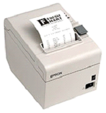
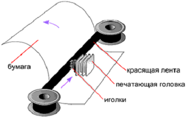

Принтеры
Принтер – это устройство, предназначенное для печати информации из компьютера на бумагу, или, как говорят на «компьютерном» языке, на твердый носитель. При этом сам процесс переноса информации называется вывод на печать, а полученный документ – распечатка.

Они различаются по принципу работы, по количеству цветов, по типу чернил и печатаемого материала, по назначению – в общем, всего и не перечесть. И каждый из этих видов еще может иметь свои особенности и дополнительные функции.
Сегодня большое распространение получили так называемые многофункциональные устройства (МФУ), в которых объединены и принтер, и сканер, и ксерокс, и даже телефакс
Матричный принтер

Механизм матричного принтера (старейшего из применяемых сегодня типов печатающих устройств) был изобретен японцами еще в 1964 году.
Принцип его работы, в общем-то, прост. Изображение на листе создается с помощью печатающей головки, состоящей из набора иголок (матрицы), которые приводятся в движение электромагнитами.
Головка перемещается построчно вдоль листа бумаги, а иголки ударяют по нему через красящую ленту, оставляя отпечаток – точечное изображение.
В разных устройствах печатающая головка может состоять из 9, 12, 14, 18 или 24 иголок. Конечно, качество лучше там, где большее количество иголок: точек больше – изображение четче.
Матричные принтеры, хотя уже и вытеснены из офисной сферы более современными устройствами, все же используются в отдельных областях. Так, печать товарных чеков основана именно на таком принципе работы.
Низкое качество, сродни работе печатной машинки, уже не позволяет использовать матричные устройства в иных сферах. Кроме того, среди минусов данных принтеров – низкая скорость печати и шумная работа.
Хотя и преимуществ раритетное устройство не лишено. Например, оно может работать практически в любых условиях и с любыми форматами бумаги, а «игольчатые» отпечатки не только устойчивы к трению и влаге, но и значительно усложняют подделку документов.
